This is a convenient quick scatter plot function for plotting any two variables x and y in a coin against each other.
At a minimum, you must specify the data set and iCode of both x and y using the dsets and iCodes arguments.
Usage
plot_scatter(
coin,
dsets,
iCodes,
...,
by_group = NULL,
alpha = 0.5,
axes_label = "iCode",
dset_label = TRUE,
point_label = NULL,
check_overlap = TRUE,
nudge_y = 5,
log_scale = c(FALSE, FALSE)
)Arguments
- coin
A coin object
- dsets
A 2-length character vector specifying the data sets to extract v1 and v2 from, respectively (passed as
dsetargument toget_data(). Alternatively specify as a single string which will be used for both x and y.- iCodes
A 2-length character vector specifying the
iCodesto use as v1 and v2, respectively (passed asiCodesargument toget_data(). Alternatively specify as a single string which will be used for both x and y.- ...
Optional further arguments to be passed to
get_data(), e.g. to specify whichuCodes to plot.- by_group
A string specifying an optional group variable. If specified, the plot will be coloured by this grouping variable.
- alpha
Transparency value for points between 0 and 1, passed to ggplot2.
- axes_label
A string specifying how to label axes and legend. Either
"iCode"to use the respective codes of each variable, or else"iName"to use the names (as specified iniMeta).- dset_label
Logical: if
TRUE(default), also adds to the axis labels which data set each variable is from.- point_label
Specifies whether and how to label points. If
"uCode", points are labelled with their unit codes, else if"uName", points are labelled with their unit names. SetNULLto remove labels (default).- check_overlap
Logical: if
TRUE(default), point labels that overlap are removed - this results in a legible plot but some labels may be missing. Else ifFALSE, all labels are plotted.- nudge_y
Parameter passed to ggplot which controls the vertical adjustment of the text labels if present.
- log_scale
A 2-length logical vector specifying whether to use log axes for x and y respectively: if
TRUE, a log axis will be used. Defaults to not-log.
Details
Optionally, the scatter plot can be coloured by grouping variables specified in the coin (see by_group). Points
and axes can be labelled using other arguments.
This function is powered by ggplot2 and outputs a ggplot2 object. To further customise the plot, assign the output
of this function to a variable and use ggplot2 commands to further edit. See vignette("visualisation) for more details on plotting.
Examples
# build example coin
coin <- build_example_coin(up_to = "new_coin")
#> iData checked and OK.
#> iMeta checked and OK.
#> Written data set to .$Data$Raw
# scatter plot of Flights against Population
# coloured by GDP per capita
# log scale applied to population
plot_scatter(coin, dsets = c("uMeta", "Raw"),
iCodes = c("Population", "Flights"),
by_group = "GDPpc_group", log_scale = c(TRUE, FALSE))
